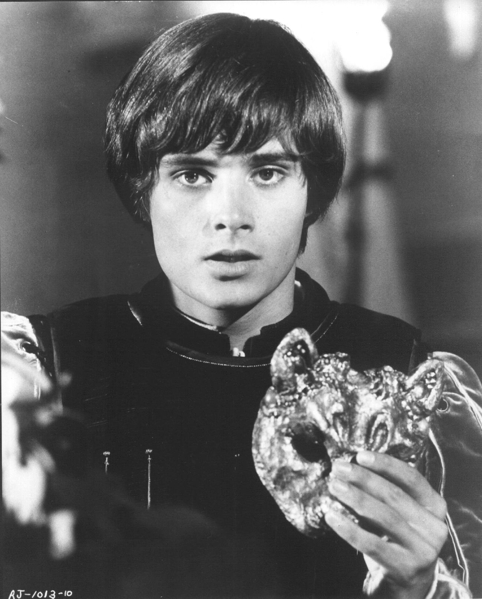
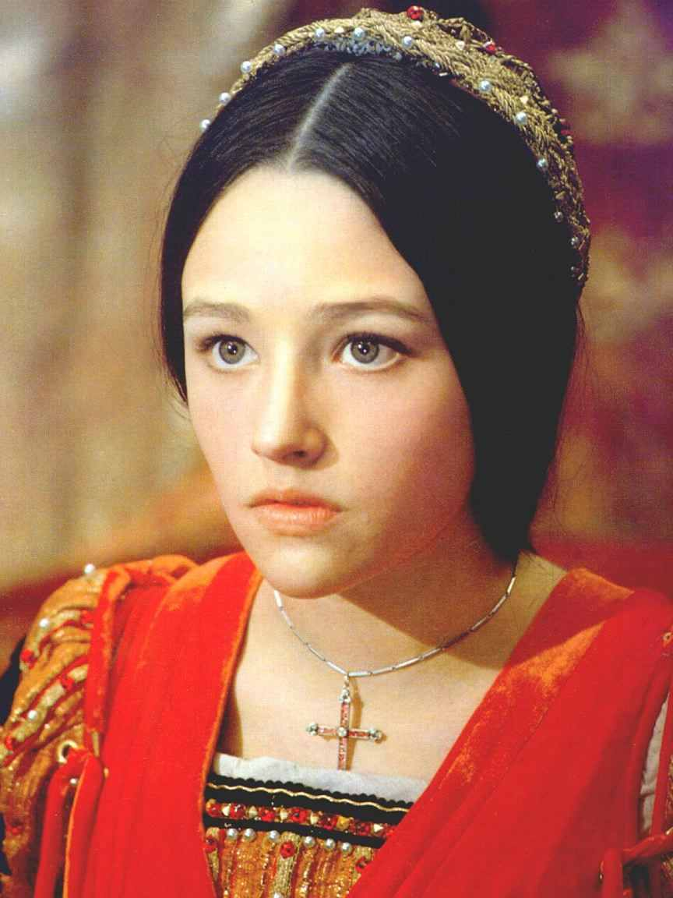

- Romeo: If I profane with my unworthiest hand This holy shrine, the gentle fine is this"My lips, two blushing pilgrims, ready stand To smooth that rough touch with a tender kiss.

- Juliet: Good pilgrim, you do wrong your hand too much, Which mannerly devotion shows in this; For saints have hands that pilgrims' hands do touch, And palm to palm is holy palmers' kiss.
- Romeo: Have not saints lips, and holy palmers too?
- Juliet: Ay, pilgrim, lips that they must use in prayer.
- Romeo: O, then, dear saint, let lips do what hands do; They pray, grant thou, lest faith turn to despair.
- Juliet: Saints do not move, though grant for prayers' sake.
- Romeo: Then move not, while my prayers' effect I take. Thus from my lips, by yours, my sin is purged.